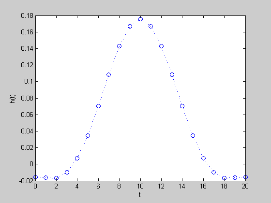
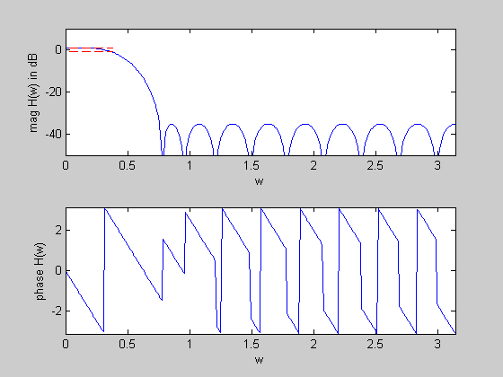

Maximize stopband attenuation of a linear phase lowpass FIR filter
n = 10;
wpass = 0.12*pi;
wstop = 0.24*pi;
max_pass_ripple = 1;
N = 30*n;
w = linspace(0,pi,N);
A = [ones(N,1) 2*cos(kron(w',[1:n]))];
ind = find((0 <= w) & (w <= wpass));
Lp = 10^(-max_pass_ripple/20)*ones(length(ind),1);
Up = 10^(max_pass_ripple/20)*ones(length(ind),1);
Ap = A(ind,:);
ind = find((wstop <= w) & (w <= pi));
As = A(ind,:);
cvx_begin
variable h(n+1,1);
minimize( max( abs( As*h ) ) )
subject to
Lp <= Ap*h;
Ap*h <= Up;
cvx_end
disp(['Problem is ' cvx_status])
if ~strfind(cvx_status,'Solved')
return
else
fprintf(1,'The minimum attenuation in the stopband is %3.2f dB.\n\n',...
20*log10(cvx_optval));
h = [flipud(h(2:end)); h];
end
figure(1)
plot([0:2*n],h','o',[0:2*n],h','b:')
xlabel('t'), ylabel('h(t)')
figure(2)
H = exp(-j*kron(w',[0:2*n]))*h;
subplot(2,1,1)
plot(w,20*log10(abs(H)),...
[0 wpass],[max_pass_ripple max_pass_ripple],'r--',...
[0 wpass],[-max_pass_ripple -max_pass_ripple],'r--');
axis([0,pi,-50,10])
xlabel('w'), ylabel('mag H(w) in dB')
subplot(2,1,2)
plot(w,angle(H))
axis([0,pi,-pi,pi])
xlabel('w'), ylabel('phase H(w)')
Calling SDPT3: 528 variables, 12 equality constraints
For improved efficiency, SDPT3 is solving the dual problem.
------------------------------------------------------------
num. of constraints = 12
dim. of socp var = 456, num. of socp blk = 228
dim. of linear var = 72
*******************************************************************
SDPT3: Infeasible path-following algorithms
*******************************************************************
version predcorr gam expon scale_data
NT 1 0.000 1 0
it pstep dstep pinfeas dinfeas gap mean(obj) cputime
-------------------------------------------------------------------
0|0.000|0.000|1.6e+02|3.9e+01|2.9e+04| 7.049258e+01| 0:0:00| chol 1 1
1|0.986|0.998|2.2e+00|1.7e-01|3.7e+02| 5.771167e+01| 0:0:00| chol 1 1
2|1.000|1.000|1.6e-05|1.0e-02|3.9e+01| 3.660459e+00| 0:0:00| chol 1 1
3|0.981|0.973|1.5e-05|1.2e-03|8.9e-01| 1.989732e-02| 0:0:00| chol 1 1
4|0.893|1.000|1.7e-06|1.0e-04|2.1e-01|-2.655342e-02| 0:0:00| chol 1 1
5|0.956|0.808|7.3e-08|2.8e-05|3.6e-02|-1.476328e-02| 0:0:00| chol 1 1
6|0.366|0.229|4.6e-08|2.2e-05|3.0e-02|-1.605070e-02| 0:0:00| chol 1 1
7|0.922|1.000|3.6e-09|1.1e-07|1.0e-02|-1.589672e-02| 0:0:00| chol 1 1
8|0.794|0.918|7.4e-10|1.9e-08|3.3e-03|-1.641776e-02| 0:0:00| chol 1 1
9|0.823|0.879|1.4e-10|3.3e-09|8.9e-04|-1.712826e-02| 0:0:00| chol 1 1
10|0.878|0.807|1.7e-11|7.5e-10|1.7e-04|-1.741063e-02| 0:0:00| chol 1 1
11|0.829|0.858|2.9e-12|1.2e-10|3.7e-05|-1.746102e-02| 0:0:00| chol 1 1
12|0.958|0.896|1.2e-13|1.3e-11|2.7e-06|-1.747513e-02| 0:0:00| chol 1 1
13|0.978|0.980|6.1e-15|1.3e-12|1.1e-07|-1.747615e-02| 0:0:00| chol 1 1
14|0.990|0.990|6.5e-15|1.0e-12|1.8e-09|-1.747620e-02| 0:0:00|
stop: max(relative gap, infeasibilities) < 1.49e-08
-------------------------------------------------------------------
number of iterations = 14
primal objective value = -1.74761950e-02
dual objective value = -1.74761967e-02
gap := trace(XZ) = 1.76e-09
relative gap = 1.70e-09
actual relative gap = 1.70e-09
rel. primal infeas = 6.50e-15
rel. dual infeas = 1.01e-12
norm(X), norm(y), norm(Z) = 6.1e-01, 3.1e-01, 1.3e+00
norm(A), norm(b), norm(C) = 8.3e+01, 2.0e+00, 9.6e+00
Total CPU time (secs) = 0.4
CPU time per iteration = 0.0
termination code = 0
DIMACS: 6.5e-15 0.0e+00 4.6e-12 0.0e+00 1.7e-09 1.7e-09
-------------------------------------------------------------------
------------------------------------------------------------
Status: Solved
Optimal value (cvx_optval): +0.0174762
Problem is Solved
The minimum attenuation in the stopband is -35.15 dB.
 